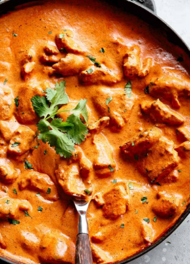

Butter Chicken

Butter chicken, traditionally known as murgh makhani, is an Indian dish originating in Delhi. It is a type of curry made from chicken with a spiced tomato and butter sauce. Its sauce is known for its rich texture. It is similar to chicken tikka masala, which uses a tomato paste.
Ingredients
Marinade
- 1 cup, Plain Yogurt
- 1 tbsp, Lemon Juice
- 2 tsp, Garam Masala
- 1 tsp, Ground Red Chili Powder
- 1 tsp, Turmeric
- 1/2 tsp, Salt
- 1.5 lbs, Boneless Skiness Chicken Thighs cut into bit side pieces
- 1 tsp, Corriander
- 3 tbsp, Ghee
Sauce
- 1/2 cup, Unsalted Butter cut into cubes
- 2 cups, Tomato Sauce
- 1 tbsp, Sugar
- 1 tsp, Ground Red Chili Powder
- 2 tbsp, Dried Fenugreek Leaves
- 1 tsp, Garam Masala
- 2 cups, Heavy Cream
- Salt to Taste
Directions
- Combine all marinade ingredients in a bowl, cover and marinate overnight, or a minimum of 2 hours.
- In a large Dutch Oven, add Ghee and heat on high. Add chicken in batches, ensuring not to crowd the pan, and sear on all sides, creating a deep brown crust. Remove with a slotted spoon and set aside.
- Using the same dutch oven, melt ¼ cup of butter and add Tomato Sauce, Sugar, Red Chili, 1tbsp of Fenugreek Leaves, and Garam Masala. Stir, and scrape all the bits of spice leftover from frying the chicken in the pan.
- Continue to cook until tomatoes reduce, thicken, and butter begins to separate (approximately 15-20 minutes).
- Add remaining butter, Heavy Cream (reserving a few tablespoons), and salt to taste. Return chicken to pan, bringing the mixture to a simmer. Cook for 5 minutes until chicken is cooked through.
- Garnish with remaining Dried Fenugreek Leaves, and a drizzle of Heavy Cream.